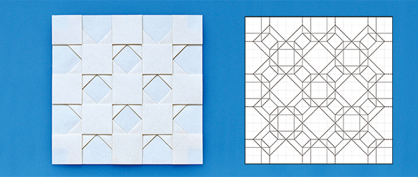
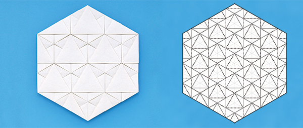
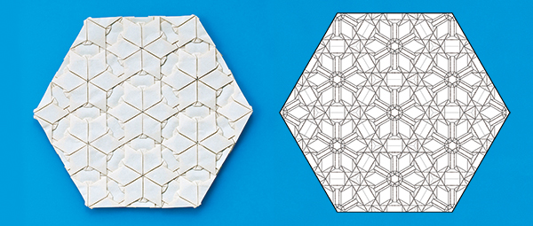
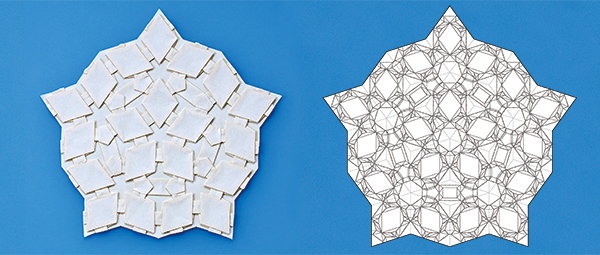
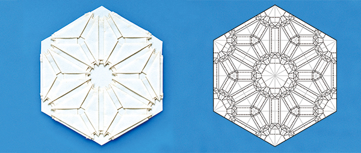
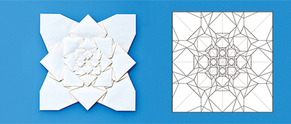

豊富な図版
文様折り紙の面白さを多数の図板・写真で解説します。

文様折り紙の面白さを多数の図板・写真で解説します。
作品例は大きく美しい二色写真で紹介しています。
作品例の展開図は、準備が整った章からインターネット上でダウンロードできます。
Downloadどのように文様折り紙を設計するか、その技法を丁寧に説明します。
より深く知りたい方のために、コラムで理論的・数学的な解説を加えています。
筑波大学システム情報系研究員，コンピュータを用いた折り紙の設計技法などに関する研究に従事．
1989年高知生まれ．2014年筑波大学博士前期課程修了．2015〜2018年に株式会社技研製作所での勤務・退職を経て，2021年筑波大学博士後期課程修了，折り紙の研究「ねじり作図法の提案と平織り設計への応用」で博士（工学）を取得．2022年より現職．日本折紙学会正会員．子供のころから，工作とプログラミングに興味を持ちつづけたことが，現在の活動につながっている．

筑波大学システム情報系教授．コンピュータ・グラフィックスに関する研究に従事．
1975年静岡生まれ．2004年東京大学大学院博士課程修了，博士（工学）．
2005年理化学研究所研究員，2006年筑波大学システム情報工学研究科講師．2015年より現職．日本折紙学会評議員．2006年〜2009年に科学技術振興機構さきがけ研究員として折り紙の研究に従事．コンピュータを用いた折り紙の設計技法などに関する研究を行っている．子供のころから紙工作とコンピュータが大好きで，それがそのまま現在の研究テーマにつながっている．主な著書に『立体折り紙アート』『曲線折り紙デザイン』(日本評論社)がある．
本書中で紹介されている作品の展開図データ（PDF、SVG、DXF形式）は現在準備中です。


上の写真「市松」のほか、以下の作品の展開図データがダウンロードできます。
ひし形の連結／変形市松／ピラミッド／ピクセルアート その1／ピクセルアート その2


上の写真「鱗」のほか、以下の作品の展開図データがダウンロードできます。
散らした鱗／正三角形の連結／亀甲


上の写真「六花の連結」のほか、以下の作品の展開図データがダウンロードできます。
星／鋭い星／六花／正方形の風車／正十角形のイスラム模様／亀甲枠の連結／七宝の連結

上の写真「ペンローズタイリング」のほか、以下の作品の展開図データがダウンロードできます。
手裏剣／六花のメタモルフォーゼ／花の連結／正方形の風車の連結／正五角形の連結／星型の連結／正十角形のイスラム模様の連結／六角形のイスラム模様の連結／異なる六花の連結


上の写真「麻の葉」のほか、以下の作品の展開図データがダウンロードできます。
ハート／星が浮かび上がる正方形／オハイオスター／籠目／毘沙門亀甲／桜／武田菱／麻の葉と毘沙門亀甲の連結

上の写真「山脈」のほか、以下の作品の展開図データがダウンロードできます。
台形の折り返し／ブロックジャバラ／ドーム／ペアノ曲線


上の写真「あじさい折りの変形」のほか、以下の作品の展開図データがダウンロードできます。
放射する市松／二崩し／風車／直角三角形の鱗／山路文／矢絣／音符
PDF形式のファイルを表示・印刷するためには、Adobe社製のAdobe Acrobat Readerなどの、PDF形式に対応したソフトウェアが必要になります。
Adobe Acrobat Reader ダウンロード用URL： https://get.adobe.com/jp/reader/
（PDFファイルを拡大・縮小して印刷するためのヒント https://helpx.adobe.com/jp/acrobat/kb/cpsid_914801.html）
DXF形式のファイルは、例えば Adobe社製の Illustrator や グラフテック株式会社のカッティングプロッタ用ソフトウェア Silhouette Studio などに対応しています。
（注：DXF形式には多様なフォーマットがあり、DXF形式に対応しているとされるソフトウェアでも、正しく読み込めないことがあります。）